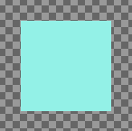
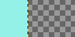

The Crop Tool is used to crop or clip an image. It works on all the layers of the image, visible and invisible. This tool is often used to remove borders, or to eliminate unwanted areas to provide you with a more focused working area. It is also useful if you need a specific image size that does not match the original dimensions of your image.
To define the crop area click and drag with the mouse. A highlighted area will appear that shows the crop boundaries. To move the whole crop area, click in the middle and drag the rectangle. Resizing can be done by moving close to the borders. The mouse cursor will change and you can drag either one side, if you are in the middle, or two sides, if you are in a corner. While you are changing the drag area, the size of the cropped area and the aspect ratio will be shown in the status bar.
When the mouse becomes the moving cross-hair, you can use the keyboard arrow keys to move the crop rectangle. Holding the Shift key down allows to move by increments of 25 pixels.
To finalize cropping, click inside the crop rectangle or press the Enter key.
![[Note]](images/note.png)
|
Note |
|---|---|
|
By default the image canvas size isn't changed after cropping. The Tool Options of the Crop Tool have a setting Delete cropped pixels that can be checked to make sure the canvas size is also adjusted to the cropped area. |
![[Tip]](images/tip.png)
|
Tip |
|---|---|
|
You can use Guides to position the crop area. Make sure that the → option is checked. |
There are different possibilities to activate the tool:
-
From the main menu: → → .
-
By clicking the tool icon
 in the Toolbox.
in the Toolbox.
-
By pressing the Shift+C keyboard shortcut.
When you maintain click on the crop rectangle, handles disappear and
-
holding down the Ctrl key toggles to the Extend from Center option,
-
holding down the Shift key toggles to the Fixed option, which makes some dimensions fixed.
Normally, tool options are displayed in a window attached under the Toolbox as soon as you activate a tool. If they are not, you can access them from the main menu through → → which opens the option window of the selected tool. The available tool options can also be accessed by double clicking the corresponding tool icon in the Toolbox.
- Selected layers only
-
This option will make crop affect only the selected layers.
- Delete cropped pixels
-
When checked, the canvas size is adjusted to the cropped area. By default this is not checked, which means that after cropping the layers have been adjusted, but the canvas size is still the same. This is to make sure you don't remove anything by accident.
- Allow Growing
-
This option allows the crop or resize to take place outside the image (or layer), and even the canvas. So, you can give the size you want to the resulting image. Transparency will be used if there is no material to crop.
Figure 14.101. Example for “Allow Growing”

An image on a big canvas

The option is checked. The crop rectangle extends outside the canvas.

The resulting image.
- Expand from Center
-
When this option is checked, the crop rectangle expands from the first pixel you clicked taken for center. You can toggle this option with Ctrl while drawing the crop rectangle.
- Fixed
-
You can also access this option by holding down the Ctrl key while drawing the crop rectangle. This option offers you several to make drawing the crop rectangle respect fixed dimensions, or their ratio:
-
Aspect ratio: That's the default possibility. Width and Height keep the same ratio they have in the original image, when drawing the crop rectangle.
-
Width / Height: Only Width or Height will remain fixed. The value of this dimension can be set in the text box below; it defaults to 100 pixels.
-
Size: Both Width and Height will be fixed. Their values can be set in the text box below, in the form “150×100” for example. The crop rectangle will adopt these values as soon as you click the image. On the right, two buttons let you choose a (widthwise) or (upright) format for the crop rectangle.
-
- Position
-
These two text fields contain the current horizontal and vertical coordinates of the upper left corner of the selection. You can use these fields to adjust the selection position precisely.
- Size
-
These two text fields contain the current width and height of the selection. You can use these fields to adjust the selection size precisely.
- Highlight
-
If you enable this option, the selected area is emphasized by a surrounding mask to make visual selection much easier.
The dark area opacity can be set using the Highlight opacity cursor.
- Guides
-
With this menu you can select the type of guides that is shown within the selection to make the creation of a selection easier, respecting Photo composition rules.
Six options are available:
-
No Guides
-
Center lines
-
Rule of thirds
-
Rule of fifths
-
Golden sections
-
Diagonal lines
-
- Auto Shrink
-
The Auto Shrink button will attempt to locate a border, in the active layer, from which to draw dimensions from. This option only works well with isolated objects contrasting sharply with background.
Figure 14.102. Auto Shrink example

An image with a sharp limit in it and a crop rectangle.

After clicking the Autoshrink button, the crop rectangle has been shrunk to fit the sharp limits.
- Shrink merged
-
This option works the same, with Auto Shrink or not. It uses the pixel information from all visible layers, rather than just from the active layer.